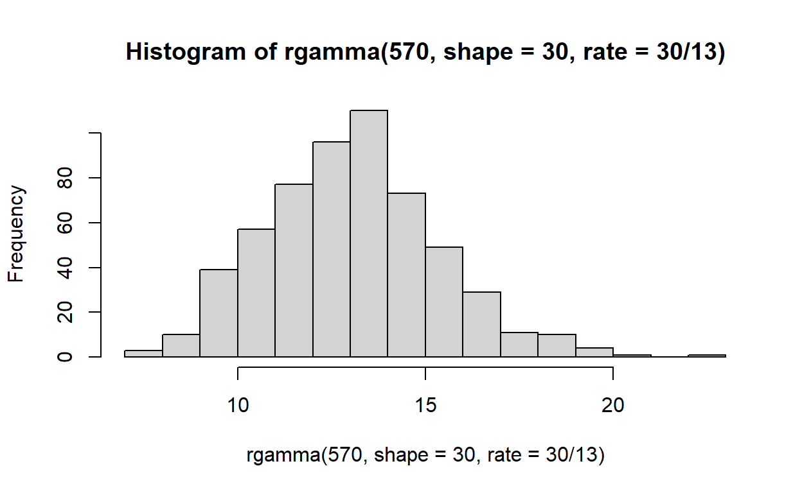
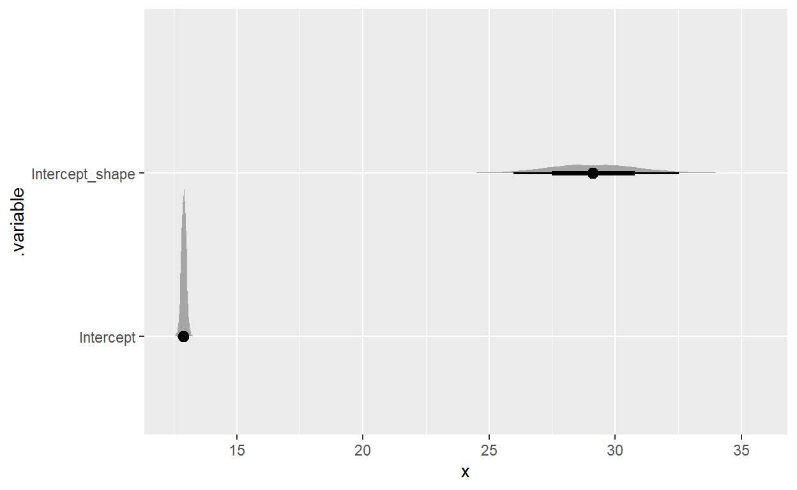
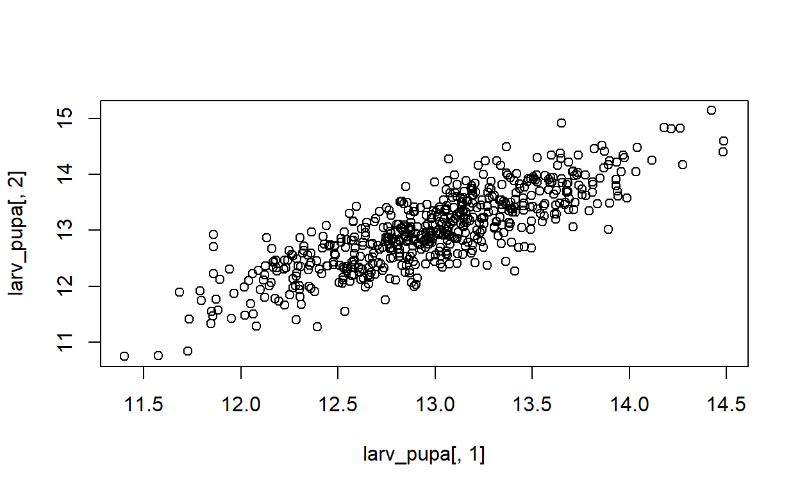
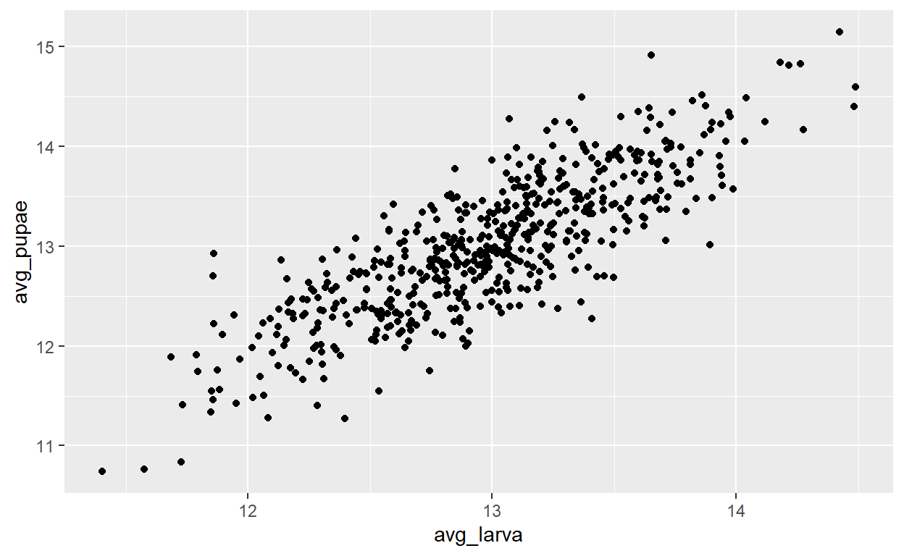
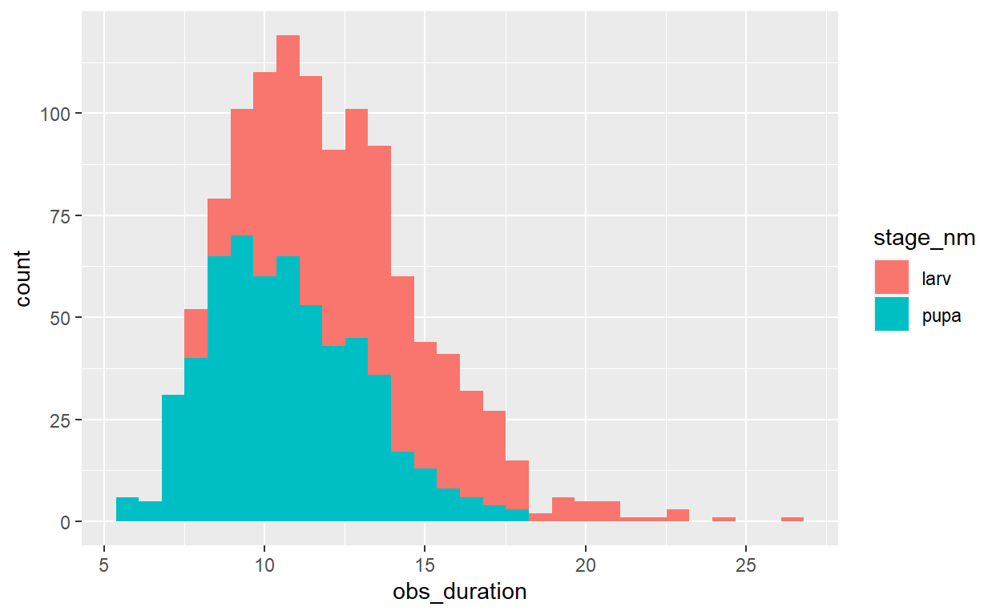
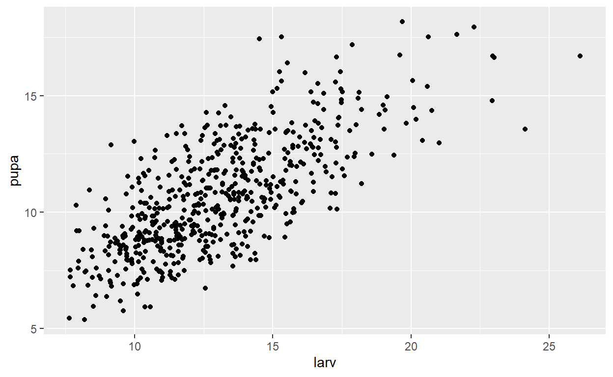
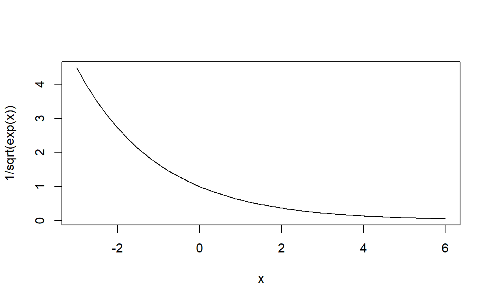
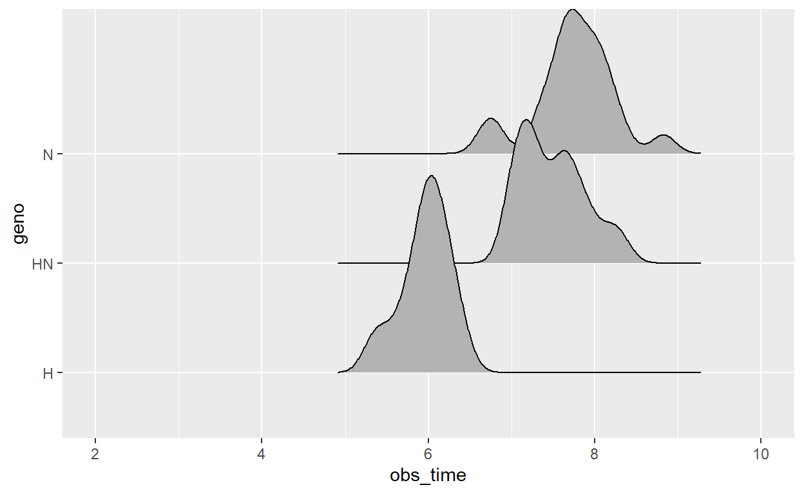
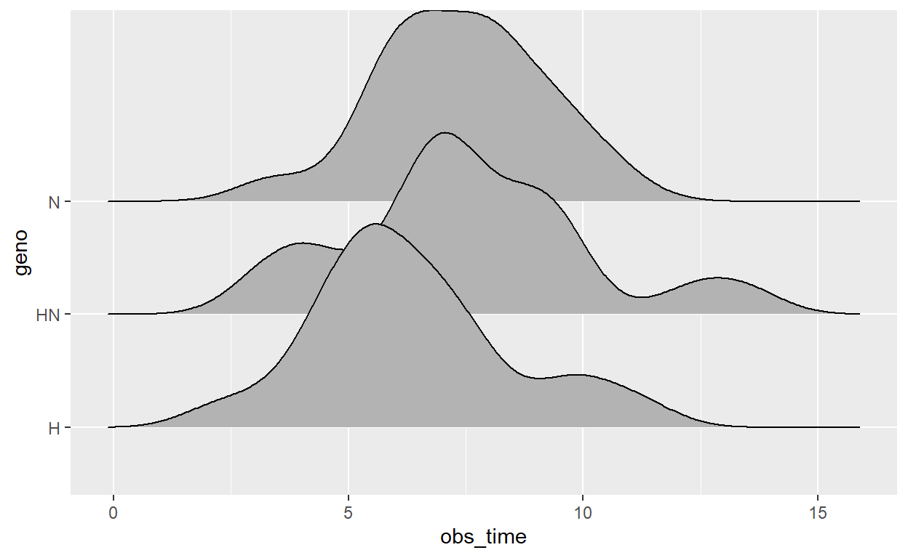

studying the gamma distribution
\[ \text{Gamma}(a, b) \]
\[ \begin{align} \mu = a/b \\ \sigma^2 = a/b^2 \end{align} \]
\[ \text{Gamma}\left(\frac{\mu^2}{\sigma^2}, \frac{\mu}{\sigma^2}\right) \]
\[ \text{Gamma}(\mu b, b) \]
\[ \text{Gamma}\left(a, \frac{a}{\mu}\right) \]
[1] 9.071691gamma_var |> sd()
[1] 3.595262# theoretical average
6*1.5
[1] 9# theory sd
sqrt(6*1.5^2)
[1] 3.674235see the brms vignettes
brms uses mean \(\mu\) rate = \(\alpha/\mu\)
mean(xx)
[1] 16.07129sd(xx)
[1] 3.023583# could also define beta = mean/variance
beta <- m/a^2
beta
[1] 1.777778[1] 16.08252sd(xx2)
[1] 2.923598ANdrew is going to ask in the Stan forum WTF is happening when you use the gamma family – why does LF behave differently thank the alternative
library(tidybayes)
## the Stan and brms parameterization of gamma translates into R like this:
mean <- 42
shape <- 2
rr <- rgamma(300, shape, shape/mean)
rr |> mean()
[1] 40.62313rr |> sd()
[1] 29.29415rr |> var()
[1] 858.147242^2/2
[1] 882gamma_form <- bf(xx ~ 1,
family = brmsfamily("Gamma",
link = "identity",
link_shape = "identity")) +
lf(shape ~ 1)
make_stancode(gamma_form, data = data.frame(xx))
// generated with brms 2.16.6
functions {
}
data {
int<lower=1> N; // total number of observations
vector[N] Y; // response variable
int prior_only; // should the likelihood be ignored?
}
transformed data {
}
parameters {
real Intercept; // temporary intercept for centered predictors
real Intercept_shape; // temporary intercept for centered predictors
}
transformed parameters {
real lprior = 0; // prior contributions to the log posterior
lprior += student_t_lpdf(Intercept | 3, 15.8, 2.8);
lprior += gamma_lpdf(Intercept_shape | 0.01, 0.01);
}
model {
// likelihood including constants
if (!prior_only) {
// initialize linear predictor term
vector[N] mu = Intercept + rep_vector(0.0, N);
// initialize linear predictor term
vector[N] shape = Intercept_shape + rep_vector(0.0, N);
for (n in 1:N) {
// apply the inverse link function
mu[n] = shape[n] / (mu[n]);
}
target += gamma_lpdf(Y | shape, mu);
}
// priors including constants
target += lprior;
}
generated quantities {
// actual population-level intercept
real b_Intercept = Intercept;
// actual population-level intercept
real b_shape_Intercept = Intercept_shape;
}prior simulations
get_prior(gamma_form, data = data.frame(xx))
prior class coef group resp dpar nlpar bound
student_t(3, 15.8, 2.8) Intercept
gamma(0.01, 0.01) Intercept shape
source
default
defaultgamma_form <- bf(xx ~ 1,
family = brmsfamily("Gamma",
link = "log",
link_shape = "log")) +
lf(shape ~ 1)
gamma_prior_predict <- brm(gamma_form, data = data.frame(xx),
prior = andrew_prior,
backend = "cmdstanr", cores = 4, sample_prior = "only", file = here::here("_posts",
"2022-06-06-hybrid-fly-life-history",
"gamma_prior_predict.rds"))
# visualize
gamma_prior_predict |>
gather_draws( b_Intercept, b_shape_Intercept, ndraws = 6)
data.frame(nn = 1:450) |>
add_predicted_draws(gamma_prior_predict, ndraws = 12) |>
ggplot(aes(x = .prediction)) +
geom_histogram() +
facet_wrap(~.draw, ncol = 4)
experimental design
H, N, and hybrid – three kinds of flies
is development time different among the three lines? Does the variance in development time differ between the lines?
begin by modelling one fly species, one life history stage
using the brms parameterization

gamma_form <- bf(xx ~ 1,
family = brmsfamily("Gamma",
link = "log",
link_shape = "log")) +
lf(shape ~ 1)
simple_gamma <- brm(gamma_form,
data = data.frame(xx = rgamma(570,
shape = 30,
rate = 30/13)),
here::here("_posts",
"2022-06-06-hybrid-fly-life-history",
"simple_gamma.rds"),
backend = "cmdstanr", cores = 4)
Running MCMC with 4 parallel chains...
Chain 2 Iteration: 1 / 2000 [ 0%] (Warmup)
Chain 3 Iteration: 1 / 2000 [ 0%] (Warmup)
Chain 4 Iteration: 1 / 2000 [ 0%] (Warmup)
Chain 1 Iteration: 1 / 2000 [ 0%] (Warmup)
Chain 1 Iteration: 100 / 2000 [ 5%] (Warmup)
Chain 2 Iteration: 100 / 2000 [ 5%] (Warmup)
Chain 3 Iteration: 100 / 2000 [ 5%] (Warmup)
Chain 4 Iteration: 100 / 2000 [ 5%] (Warmup)
Chain 2 Iteration: 200 / 2000 [ 10%] (Warmup)
Chain 3 Iteration: 200 / 2000 [ 10%] (Warmup)
Chain 1 Iteration: 200 / 2000 [ 10%] (Warmup)
Chain 2 Iteration: 300 / 2000 [ 15%] (Warmup)
Chain 4 Iteration: 200 / 2000 [ 10%] (Warmup)
Chain 1 Iteration: 300 / 2000 [ 15%] (Warmup)
Chain 3 Iteration: 300 / 2000 [ 15%] (Warmup)
Chain 4 Iteration: 300 / 2000 [ 15%] (Warmup)
Chain 2 Iteration: 400 / 2000 [ 20%] (Warmup)
Chain 1 Iteration: 400 / 2000 [ 20%] (Warmup)
Chain 2 Iteration: 500 / 2000 [ 25%] (Warmup)
Chain 3 Iteration: 400 / 2000 [ 20%] (Warmup)
Chain 4 Iteration: 400 / 2000 [ 20%] (Warmup)
Chain 1 Iteration: 500 / 2000 [ 25%] (Warmup)
Chain 2 Iteration: 600 / 2000 [ 30%] (Warmup)
Chain 3 Iteration: 500 / 2000 [ 25%] (Warmup)
Chain 4 Iteration: 500 / 2000 [ 25%] (Warmup)
Chain 1 Iteration: 600 / 2000 [ 30%] (Warmup)
Chain 3 Iteration: 600 / 2000 [ 30%] (Warmup)
Chain 4 Iteration: 600 / 2000 [ 30%] (Warmup)
Chain 1 Iteration: 700 / 2000 [ 35%] (Warmup)
Chain 2 Iteration: 700 / 2000 [ 35%] (Warmup)
Chain 3 Iteration: 700 / 2000 [ 35%] (Warmup)
Chain 2 Iteration: 800 / 2000 [ 40%] (Warmup)
Chain 4 Iteration: 700 / 2000 [ 35%] (Warmup)
Chain 1 Iteration: 800 / 2000 [ 40%] (Warmup)
Chain 2 Iteration: 900 / 2000 [ 45%] (Warmup)
Chain 3 Iteration: 800 / 2000 [ 40%] (Warmup)
Chain 4 Iteration: 800 / 2000 [ 40%] (Warmup)
Chain 1 Iteration: 900 / 2000 [ 45%] (Warmup)
Chain 3 Iteration: 900 / 2000 [ 45%] (Warmup)
Chain 4 Iteration: 900 / 2000 [ 45%] (Warmup)
Chain 1 Iteration: 1000 / 2000 [ 50%] (Warmup)
Chain 1 Iteration: 1001 / 2000 [ 50%] (Sampling)
Chain 2 Iteration: 1000 / 2000 [ 50%] (Warmup)
Chain 3 Iteration: 1000 / 2000 [ 50%] (Warmup)
Chain 3 Iteration: 1001 / 2000 [ 50%] (Sampling)
Chain 4 Iteration: 1000 / 2000 [ 50%] (Warmup)
Chain 4 Iteration: 1001 / 2000 [ 50%] (Sampling)
Chain 1 Iteration: 1100 / 2000 [ 55%] (Sampling)
Chain 2 Iteration: 1001 / 2000 [ 50%] (Sampling)
Chain 2 Iteration: 1100 / 2000 [ 55%] (Sampling)
Chain 1 Iteration: 1200 / 2000 [ 60%] (Sampling)
Chain 3 Iteration: 1100 / 2000 [ 55%] (Sampling)
Chain 4 Iteration: 1100 / 2000 [ 55%] (Sampling)
Chain 2 Iteration: 1200 / 2000 [ 60%] (Sampling)
Chain 3 Iteration: 1200 / 2000 [ 60%] (Sampling)
Chain 4 Iteration: 1200 / 2000 [ 60%] (Sampling)
Chain 1 Iteration: 1300 / 2000 [ 65%] (Sampling)
Chain 2 Iteration: 1300 / 2000 [ 65%] (Sampling)
Chain 3 Iteration: 1300 / 2000 [ 65%] (Sampling)
Chain 4 Iteration: 1300 / 2000 [ 65%] (Sampling)
Chain 1 Iteration: 1400 / 2000 [ 70%] (Sampling)
Chain 1 Iteration: 1500 / 2000 [ 75%] (Sampling)
Chain 2 Iteration: 1400 / 2000 [ 70%] (Sampling)
Chain 3 Iteration: 1400 / 2000 [ 70%] (Sampling)
Chain 4 Iteration: 1400 / 2000 [ 70%] (Sampling)
Chain 1 Iteration: 1600 / 2000 [ 80%] (Sampling)
Chain 2 Iteration: 1500 / 2000 [ 75%] (Sampling)
Chain 3 Iteration: 1500 / 2000 [ 75%] (Sampling)
Chain 4 Iteration: 1500 / 2000 [ 75%] (Sampling)
Chain 2 Iteration: 1600 / 2000 [ 80%] (Sampling)
Chain 1 Iteration: 1700 / 2000 [ 85%] (Sampling)
Chain 3 Iteration: 1600 / 2000 [ 80%] (Sampling)
Chain 4 Iteration: 1600 / 2000 [ 80%] (Sampling)
Chain 1 Iteration: 1800 / 2000 [ 90%] (Sampling)
Chain 2 Iteration: 1700 / 2000 [ 85%] (Sampling)
Chain 3 Iteration: 1700 / 2000 [ 85%] (Sampling)
Chain 4 Iteration: 1700 / 2000 [ 85%] (Sampling)
Chain 1 Iteration: 1900 / 2000 [ 95%] (Sampling)
Chain 2 Iteration: 1800 / 2000 [ 90%] (Sampling)
Chain 3 Iteration: 1800 / 2000 [ 90%] (Sampling)
Chain 1 Iteration: 2000 / 2000 [100%] (Sampling)
Chain 4 Iteration: 1800 / 2000 [ 90%] (Sampling)
Chain 1 finished in 3.1 seconds.
Chain 2 Iteration: 1900 / 2000 [ 95%] (Sampling)
Chain 3 Iteration: 1900 / 2000 [ 95%] (Sampling)
Chain 4 Iteration: 1900 / 2000 [ 95%] (Sampling)
Chain 2 Iteration: 2000 / 2000 [100%] (Sampling)
Chain 3 Iteration: 2000 / 2000 [100%] (Sampling)
Chain 4 Iteration: 2000 / 2000 [100%] (Sampling)
Chain 2 finished in 3.3 seconds.
Chain 3 finished in 3.3 seconds.
Chain 4 finished in 3.3 seconds.
All 4 chains finished successfully.
Mean chain execution time: 3.2 seconds.
Total execution time: 3.6 seconds.simple_gamma |>
gather_rvars(Intercept, Intercept_shape) |>
mutate(.value = exp(.value)) |>
ggplot(aes(y = .variable, dist = .value)) +
stat_dist_halfeye()

duration and variance are approximately (but not necessarily) equal
Start with: many individuals all with the same expected duration of each life history stage.
correlated both stages
corr_larva_pupa <- .8
corr_mat <- matrix(c(1, corr_larva_pupa,
corr_larva_pupa, 1), byrow = TRUE, ncol = 2)
larv_sd <- .5
pupa_sd <- .7
sds <- c(larv_sd, pupa_sd)
Sigma <- diag(sds) %*% corr_mat %*% diag(sds)
larv_pupa <- MASS::mvrnorm(570, mu = c(13, 13), Sigma = Sigma)
plot(larv_pupa[,1], larv_pupa[,2])

Add observation variance
true_shape <- 70
fake_development_times <- tibble(fly_id = 1:570,
fly_code = paste0("fly", fly_id)) |>
mutate(avg_larva = larv_pupa[fly_id, 1],
avg_pupae = larv_pupa[fly_id, 2]) |>
rowwise() |>
mutate(
# add observation variance
obs_larva = rgamma(1, shape = true_shape, rate = true_shape/avg_larva),
obs_pupae = rgamma(1, shape = true_shape, rate = true_shape/avg_pupae)
)
plot, then model
fake_development_times |>
ggplot(aes(x = obs_larva, y = obs_pupae)) + geom_point()

fake_development_times |>
ggplot(aes(x = avg_larva, y = avg_pupae)) + geom_point()

correlation is hard to see under the gamma errors!
let’s see if a model can recover that
fake_devo_long <- fake_development_times |>
select(-starts_with("avg")) |>
pivot_longer(starts_with("obs"),
names_to = "stage",
values_to = "days")
gamma_form_correlated_stages <- bf(days ~ stage + (1 + stage | fly_code),
family = brmsfamily("Gamma",
link = "log",
link_shape = "log")) +
lf(shape ~ 1)
get_prior(gamma_form_correlated_stages, data = fake_devo_long)
prior class coef group resp dpar
(flat) b
(flat) b stageobs_pupae
lkj(1) cor
lkj(1) cor fly_code
student_t(3, 2.6, 2.5) Intercept
student_t(3, 0, 2.5) sd
student_t(3, 0, 2.5) sd fly_code
student_t(3, 0, 2.5) sd Intercept fly_code
student_t(3, 0, 2.5) sd stageobs_pupae fly_code
student_t(3, 0, 2.5) Intercept shape
nlpar bound source
default
(vectorized)
default
(vectorized)
default
default
(vectorized)
(vectorized)
(vectorized)
defaultcorr_stages_priors <- c(
prior(normal(0,1), class = "b"),
prior(lkj(2), class = "cor"),
prior(normal(2.5,1), class = "Intercept"),
prior(exponential(2), class = "sd"),
prior(normal(4,2), class = "Intercept", dpar = "shape")
)
correlated_stages_gamma <- brm(gamma_form_correlated_stages,
data = fake_devo_long,
prior = corr_stages_priors,
file = here::here("_posts", "2022-06-06-hybrid-fly-life-history", "corr_gamma.rds"),
cores = 4)
correlated_stages_gamma
Family: gamma
Links: mu = log; shape = log
Formula: days ~ stage + (1 + stage | fly_code)
shape ~ 1
Data: fake_devo_long (Number of observations: 1140)
Draws: 4 chains, each with iter = 2000; warmup = 1000; thin = 1;
total post-warmup draws = 4000
Group-Level Effects:
~fly_code (Number of levels: 570)
Estimate Est.Error l-95% CI u-95% CI
sd(Intercept) 0.04 0.01 0.01 0.06
sd(stageobs_pupae) 0.03 0.02 0.00 0.07
cor(Intercept,stageobs_pupae) -0.04 0.41 -0.73 0.77
Rhat Bulk_ESS Tail_ESS
sd(Intercept) 1.01 292 565
sd(stageobs_pupae) 1.02 245 286
cor(Intercept,stageobs_pupae) 1.00 982 2074
Population-Level Effects:
Estimate Est.Error l-95% CI u-95% CI Rhat Bulk_ESS
Intercept 2.56 0.01 2.55 2.57 1.00 3898
shape_Intercept 4.20 0.07 4.06 4.35 1.01 345
stageobs_pupae 0.01 0.01 -0.01 0.02 1.00 2033
Tail_ESS
Intercept 2312
shape_Intercept 415
stageobs_pupae 613
Draws were sampled using sampling(NUTS). For each parameter, Bulk_ESS
and Tail_ESS are effective sample size measures, and Rhat is the potential
scale reduction factor on split chains (at convergence, Rhat = 1).Maybe a simpler model (the above seems overparameterized) where each larva has a single offset (e.g. proportional to “quality†or “resource use efficiency”).
nfly <- 570
# average time you spend as a larva
log_avg_larva_time <- log(13)
# average time DIFFERECE to the time you spend as a pupa (might be close to 0)
log_to_pupa <- -.2
# your "quality", some idea of how much above and below the population you are
log_indiv_quality <- rnorm(n = nfly, mean = 0, sd = .2)
exp(log_avg_larva_time)
[1] 13exp(log_avg_larva_time + log_to_pupa)
[1] 10.6435fake_flies_intercept <- tibble(
fly_id = 1:570,
fly_code = paste0("fly", fly_id)
) |>
rowwise() |>
mutate(lh = list(data.frame(stage_id = c(0,1),
stage_nm = c("larv", "pupa"))))
true_shape_intercept <- 72
fake_intercept_obs <- fake_flies_intercept |>
unnest(cols = c("lh")) |>
mutate(avg_duration = log_avg_larva_time + log_to_pupa*stage_id,
ecart_indiv = log_indiv_quality[fly_id],
fly_duration = avg_duration + ecart_indiv) |>
rowwise() |>
mutate(obs_duration = rgamma(1, true_shape_intercept, rate = true_shape_intercept/exp(fly_duration)))
fake_intercept_obs |>
ggplot(aes(x = obs_duration, fill = stage_nm)) + geom_histogram()

fake_intercept_obs |>
select(fly_id, stage_nm, obs_duration) |>
ungroup() |>
pivot_wider(names_from = stage_nm, values_from = obs_duration) |>
ggplot(aes(x = larv, y = pupa)) + geom_point()

model to recover
gamma_form_intercept <- bf(obs_duration ~ stage_nm + (1| fly_code),
family = brmsfamily("Gamma",
link = "log",
link_shape = "log")) +
lf(shape ~ 1)
get_prior(gamma_form_intercept, data = fake_intercept_obs)
prior class coef group resp dpar
(flat) b
(flat) b stage_nmpupa
student_t(3, 2.5, 2.5) Intercept
student_t(3, 0, 2.5) sd
student_t(3, 0, 2.5) sd fly_code
student_t(3, 0, 2.5) sd Intercept fly_code
student_t(3, 0, 2.5) Intercept shape
nlpar bound source
default
(vectorized)
default
default
(vectorized)
(vectorized)
defaultintercept_priors <- c(
prior(normal(0,1), class = "b"),
prior(normal(2.5,1), class = "Intercept"),
prior(exponential(2), class = "sd"),
prior(normal(4,2), class = "Intercept", dpar = "shape")
)
intercept_stages_gamma <- brm(gamma_form_intercept,
data = fake_intercept_obs,
prior = intercept_priors,
file = here::here("_posts", "2022-06-06-hybrid-fly-life-history", "intercept_gamma.rds"),
cores = 4)
Genetic lines
- avg for one genotype
- average for the second
- diff between their average and the hybrid
H, N, and hybrid
We can generate this with Helmert contrasts
three_helmerts_default <- contr.helmert(3)
three_helmerts <- sweep(cbind(1, three_helmerts_default), MARGIN = 2, STATS = 1:3, FUN = `/`)
three_helmerts
[,1] [,2] [,3]
1 1 -0.5 -0.3333333
2 1 0.5 -0.3333333
3 1 0.0 0.6666667solve(three_helmerts)
1 2 3
[1,] 0.3333333 0.3333333 0.3333333
[2,] -1.0000000 1.0000000 0.0000000
[3,] -0.5000000 -0.5000000 1.0000000We have effects and we want to make group differences out of them:
# units in days
grand_mean <- 7
# n develops 2 days slower
h_n_contr <- 2
# hybrids develop 5 days slower
hybrid_effect <- 0
geno_names <- c("H", "N", "HN")
rownames(three_helmerts) <- geno_names
avg_effects <- tibble(geno = rep(geno_names, each = 20),
geno_mean = grand_mean*three_helmerts[geno, 1] + h_n_contr*three_helmerts[geno, 2] + hybrid_effect*three_helmerts[geno, 3])
avg_effects |>
ggplot(aes(x = factor(geno, levels = geno_names), y = geno_mean)) + geom_point()

distinct(avg_effects)
# A tibble: 3 x 2
geno geno_mean
<chr> <dbl>
1 H 6
2 N 8
3 HN 7This also works on the log scale:
# units in days
log_grand_mean <- log(7)
# n develops 30% longer
log_h_n_contr <- log(1.3)
# hybrids develop 10% longer than expected
log_hybrid_effect <- log(1.1)
avg_effects <- tibble(geno = rep(geno_names, each = 20),
geno_mean = log_grand_mean*three_helmerts[geno, 1] +
log_h_n_contr*three_helmerts[geno, 2] +
log_hybrid_effect*three_helmerts[geno, 3])
avg_effects |>
ggplot(aes(x = factor(geno, levels = geno_names), y = exp(geno_mean))) +
geom_point()
# A tibble: 3 x 3
geno geno_mean `exp(geno_mean)`
<chr> <dbl> <dbl>
1 H 1.78 5.95
2 N 2.05 7.73
3 HN 2.01 7.46extend this to variation effects
mean(rr)
[1] 30.01375var(rr)
[1] 16.0183530^2/exp(4)
[1] 16.48407sd(rr)
[1] 4.002293[1] 4.060058
Use parameterization of gamma used by brms: the parameter \(\alpha\) scales the square of the variance to the mean.
# start with shape = 1 for simplicity!
log_shape <- 6
library(ggridges)
avg_effects |>
mutate(obs_time = rgamma(nrow(avg_effects), shape = exp(log_shape), rate = exp(log_shape)/exp(geno_mean))) |>
ggplot(aes(y = geno, x = obs_time)) +
stat_density_ridges() +
coord_cartesian(xlim = c(2, 10))

now let genotype control the variance AND the average
shape_params <- c(grand_var = log(9), diff_h_n = log(1), hybrid_effect = log(.7))
three_helmerts %*% shape_params
[,1]
H 2.316116
N 2.316116
HN 1.959441 [,1]
H 10.136231
N 10.136231
HN 7.095362avg_var_effects <- avg_effects |>
# add shape AKA concentration parameters
mutate(geno_shape = shape_params[1]*three_helmerts[geno, 1] +
shape_params[2]*three_helmerts[geno, 2] +
shape_params[3]*three_helmerts[geno, 3])
time_observations_onestage <- avg_var_effects |>
mutate(obs_time = rgamma(nrow(avg_var_effects), shape = exp(geno_shape), rate = exp(geno_shape)/exp(geno_mean)))
time_observations_onestage |>
ggplot(aes(x = obs_time, y = geno)) + stat_density_ridges()

nfly <- 570
# average time you spend as a larva
log_avg_larva_time <- log(13)
# average time DIFFERECE to the time you spend as a pupa (might be close to 0)
log_to_pupa <- -.2
# your "quality", some idea of how much above and below the population you are
log_indiv_quality <- rnorm(n = nfly, mean = 0, sd = .2)
exp(log_avg_larva_time)
exp(log_avg_larva_time + log_to_pupa)
genotype_vals <- tibble(genotype = rep(c("H", "N", "HN"), each = 100),
fly_id = 1:300) |>
rowwise() |>
mutate(lh = list(data.frame(stage_id = c(0,1),
stage_nm = c("larv", "pupa")))) |>
unnest(cols ="lh")
true_shape_intercept <- 72
genotype_vals |>
rowwise() |>
mutate(avg_duration =
log_avg_larva_time +
log_to_pupa*stage_id +
log_indiv_quality[fly_id] + genotype_mean[genotype])